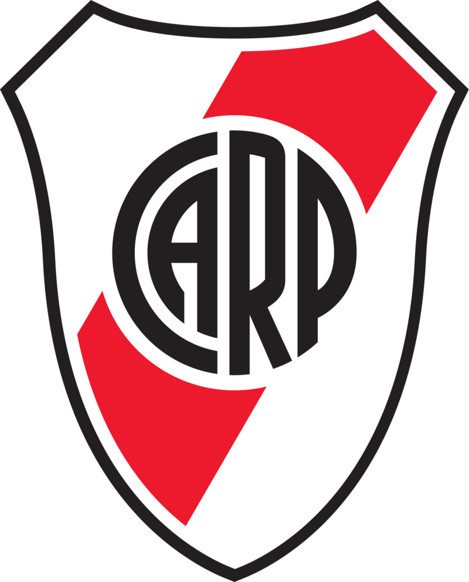
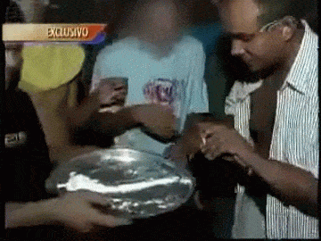

Pagina oficial de river donde se publican noticias, fechas de partidos y resultados

El Club Atlético River Plate es una entidad polideportiva de Argentina. Fue fundado el 25 de mayo de 1901 en el barrio de La Boca, tras la fusión de los clubes Santa Rosa y La Rosales, y su nombre proviene de la antigua denominación que se le daba en el inglés británico al Río de la Plata.
>en el profesionalismo y el más ganador a nivel local con 51 títulos (37 torneos y 14 copas nacionales). Suma un total de 69 títulos sumando títulos internacionales, amateur y copas rioplatenses.
> Click aqui para ver el calendario de partidos